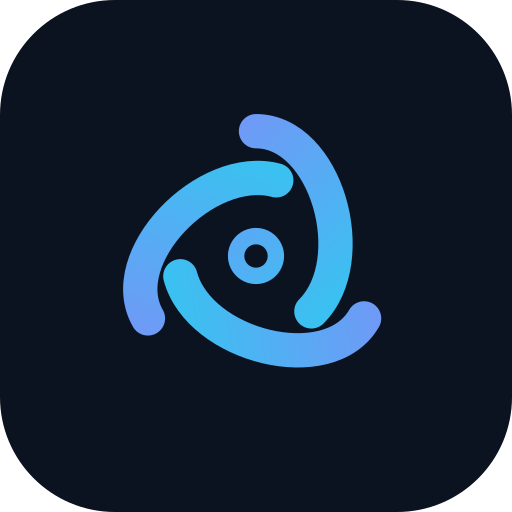
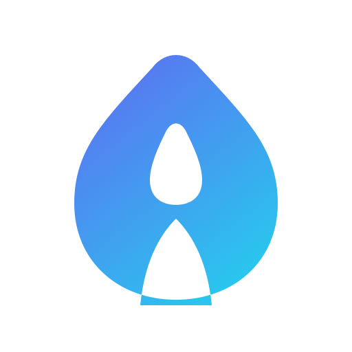
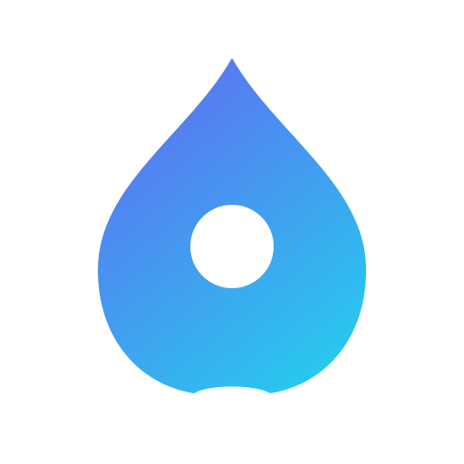
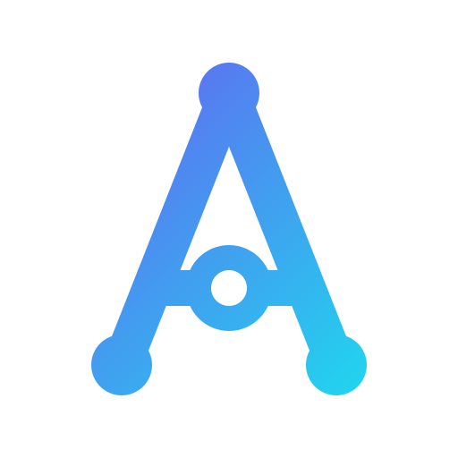
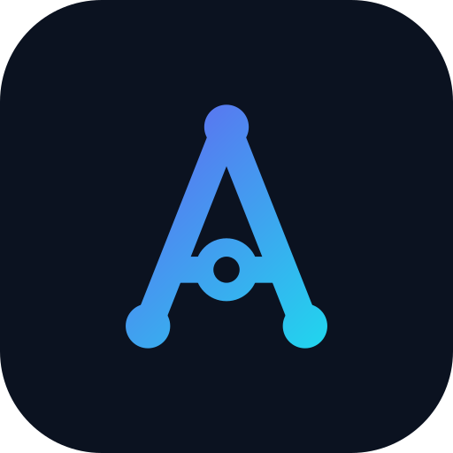
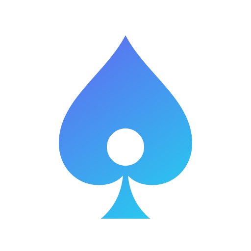
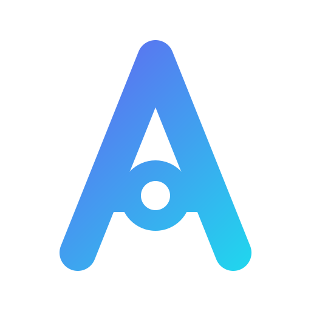

定稿:aperture 光圈 · 全套资产
主图标 icon-primary

App 图标 icon-app-dark
favicon 96 / 32 / 16 px
横版 Logo(浅色用)
定稿 · 深色背景
主图标
favicon 加粗版
横版 Logo(深色用)
V3 探索方案(flow 变体 + 全新方向)
flow-asym 不对称汇流
flow-orbit 环穿流线
aperture 光圈

negative-A 负形 A
spade-liquid 液态黑桃
flow-asym 96 / 32 / 16 px
aperture 96 / 32 / 16 px
negative-A 96 / 32 / 16 px
V3 探索方案 · 深色背景
flow-asym
flow-orbit
aperture
negative-A
spade-liquid
V2 融合方案(曲线化,去直白 A / 黑桃)
V2 主推:flow 双流汇聚
V2 备选:loop 开口环

V2 备选:bloom 实心花苞
flow 96 / 32 / 16 px
V2 融合方案 · 深色背景
flow
loop
bloom
V1 方案(存档)

主图标 icon-v1-primary

App 图标 icon-v1-app-dark

备选:黑桃 icon-alt-spade
备选:六边形 icon-alt-hex
横版 Logo(浅色用)

favicon 96 / 32 / 16 px
V1 方案(存档)· 深色背景
主图标
黑桃
六边形
横版 Logo(深色用)